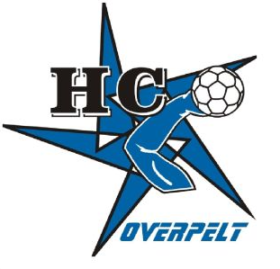

Handbalclub Overpelt is een sportvereniging gevestigd in sporthal de bemvoort Overpelt, inschrijvingen kunnen gebeuren vanaf 6 jaar.
| Ploegen | Trainers |
|---|---|
| j10 | Cuyvers Tom |
| j12 | Tielens Niels |
| j14 | Geusens Wim |
| j16 | Cuyvers Tom |
| j18 | Geusens Wim |
| Heren 1 | Wolak Darius |
| Heren 2 | Wouters Joeri |
| fithandbal | onbekend |
Jeugdgroepen hebben 2 keer per week training,net zoals de volwassenen.
Deze traningen duren anderhalf tot 2 uur.
meer informatie:handbalclub Overpelt.
